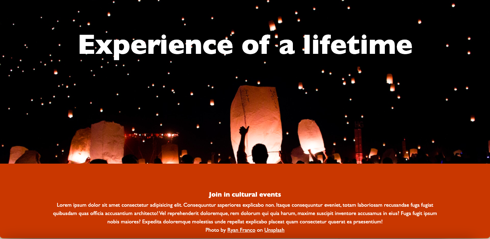
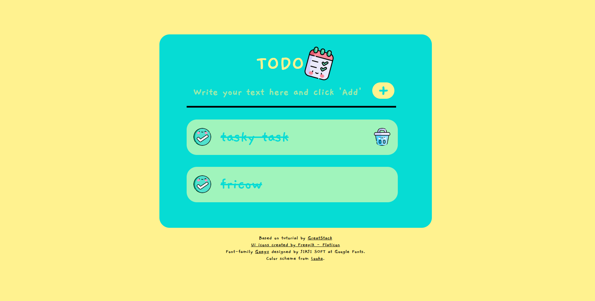
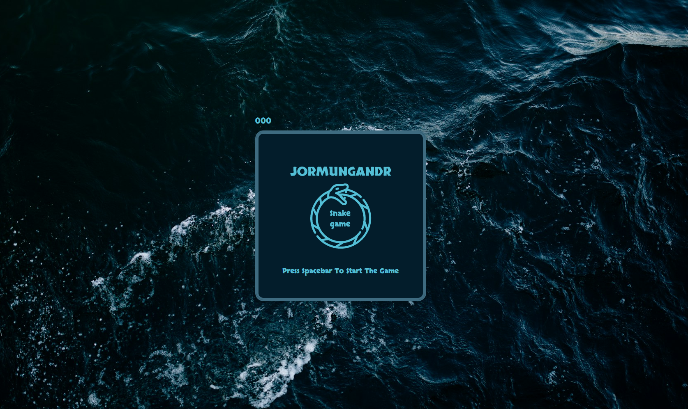

Hei!
Jeg heter Silje. Dette er min frontend portfolio laget i forbindelse med et kurs i webutvikling.
Klikk på Prosjekter eller scroll nedover for å se hva jeg har laget.
Prosjekter
Klikk på prosjektene under for å se nærmere på de.
Parallax side
Dette er et prosjekt hvor vi skulle lage en webside med parallax effekt. Jeg valgte å lage et fiktivt byrå som spesialiserer seg på stjernekikking og lignende aktiviteter.
Klikk her for å se prosjektet. Klikk tilbakeknapp i nettleseren din for å komme tilbake til portfoliosiden.
Gjøremålsliste
En av prosjektene var å lage en gjøremålsliste (eller todo-liste) i Javascript. Denne er basert på en tutorial med et par endringer i CSS. Lenker til tutorial, ikoner, fonter og fargevalg er inne i selve prosjektet nederst på siden.
Klikk her for å se prosjektet. Klikk tilbakeknapp i nettleseren din for å komme tilbake til portfoliosiden.
Slangespill
På fritiden har jeg forsøkt å lære litt om hvordan kode ulike spill. Det første jeg fullførte var spillet Snake. Jeg fulgte tutorial av @howtobecomeadeveloper på freeCodeCamp.org og endret på CSS for å gi en egen vri på det. Prosjektet er fortsatt under utvikling. Klikk her for å se prosjektet. Klikk tilbakeknapp i nettleseren din for å komme tilbake til portfoliosiden.
Ouroboros ikon i logo er laget av Freepik - Flaticon. Viking skip ikon er laget av Freepik - Flaticon. Bakgrunnsbilde er tatt av Michael Benz på Unsplash.
Font Skranji er designet av Neapolitan på Google Fonts.
Om meg
Mitt navn er Silje og jeg driver med webdesign- og utvikling.
Hovedsaklig har jeg kunnskap innenfor grafisk design, HTML og CSS.
Verktøy jeg bruker er blant annet Figma, VS Code og Github.
Akkurat nå holder jeg på å lære mer om Javascript.
Se tilbake her på portfolioen min for oppdateringer med nye prosjekter etterhvert.